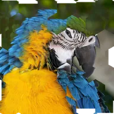

جابهجایی کاشی ششگوش

لایه را به کاشیهای ششگوش تقسیم میکند و تصویر داخل هر کاشی را در جهتی تصادفی میلغزاند.
تنظیمات
| تنظیم | نوع | بازه | پیشفرض |
|---|---|---|---|
| شدت | عدد | 0 تا 1 | 0.1 |
| آفست | نقطه (X, Y) | -5000 px تا 5000 px | 0 px, 0 px |
| تعداد | عدد | 0.5 تا 200 | 10 |
| زاویه | زاویه | -3600° تا 3600° | 0° |
| سید | عدد | 0 تا 5 | 0 |